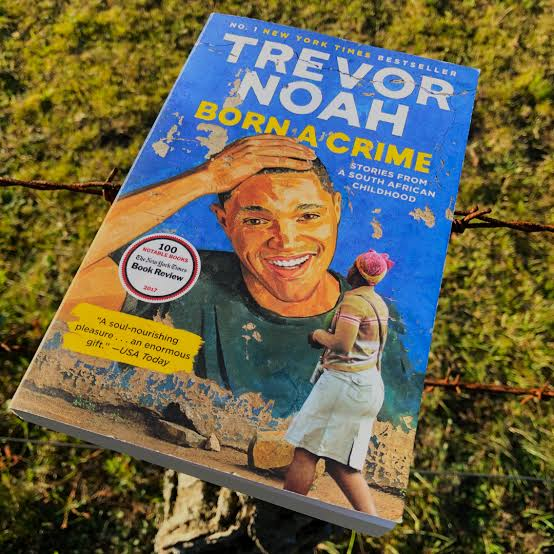

Trevor Noah’s childhood was shaped by secrecy. He was born into a world where his
existence was considered a crime under apartheid. His mother, Patricia, couldn’t openly
acknowledge him in public and she had to pretend they weren’t related or walk ahead as if
they were strangers. She kept him hidden, protecting him from a system that saw his mixed
race identity as illegal. This is what I mean: “Raised in shadows” growing up in a world that
refused to recognize him,forcing him to navigate life cautiously.
But despite being kept in the background, Trevor was never meant to stay there. His mother
made sure of that. She raised him with confidence, humor, and the belief that he was
destined for something greater. She taught him to think beyond the circumstances he was
born into, pushing him to dream. Trevor wasn’t just surviving apartheid’s injustice- he was
growing, adapting, and preparing to carve out his own feature.
He went on to “shine”, using his intelligence and humor to turn his struggles into stories that
resonated with the world. His journey proves that where you start doesn’t define where you
end up. His mother raised him in the shadows, but she never let him believe he belonged
there. he was Always meant to rise beyond it.
"Abel wanted a traditional marriage with a traditional wife… but he never
fell in love with subservient women… 'He only wants a woman who is free because
his dream is to put her in a cage.'”
This quote makes me think a lot about gender roles and power dynamics in relationship.
The quote especially this part “He only wants a woman who is free because his dream is to
put her in a cage.'” captures Abel’s toxic mindset. He wasn’t looking for love, he was looking for
control.
Trevor describes how his stepfather, Abel, wanted a strong woman like Patricia, but instead of welcoming
her
autonomy(independence), he tried to crush it. He admired her confidence at first, but once she was his,
he
saw
it as a threat. He wanted to own her, not love her. It was painful to read how Patricia suffered under
his
abuse,
forced to shrink herself for survival. What’s even worse is how this mindset still exists today.
There are men who claim To be attracted to strong, independent women, only to control
them later telling them how to act, what to wear, who to talk to. It happens in relationships
where a partner initially supports a woman’s ambitions but later discourages her growth. Society pushes
women to be
outspoken and successful, yet in many cultures, they are still expected to be submissive in marriage.
Even in workplaces(Example:The school that i learn highschool), confident women are labeled”bossy” or
“too
much”,
while men with the same traits are seen as leaders.
The pressure to be strong but not too strong.
This quote reminds us that love should never feel like a cage. A relationship should be a partnership,
not a
power
struggle. Women shouldn’t have to fight to keep their freedom,
true love should make them feel even more free.
